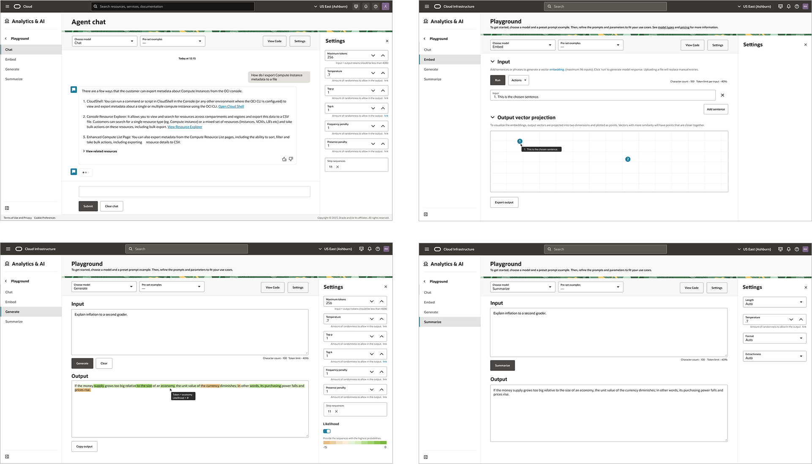
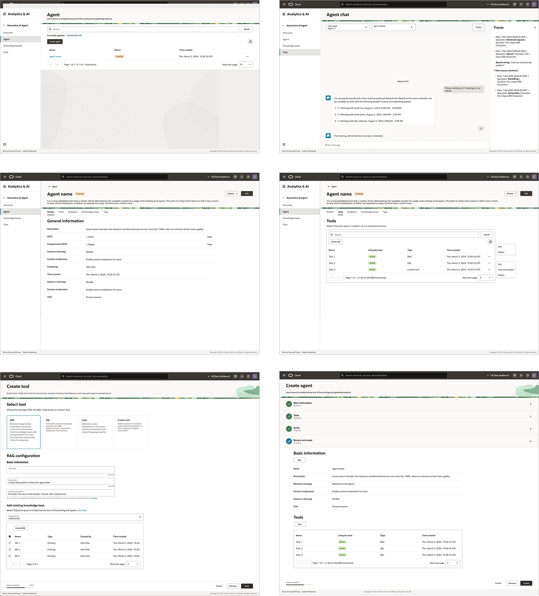
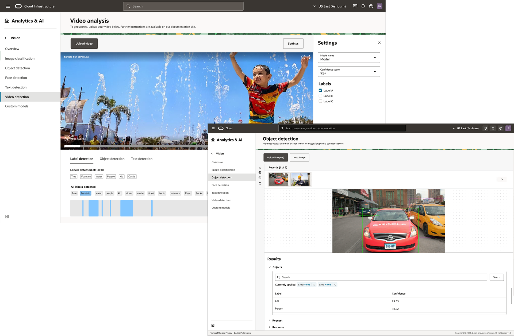
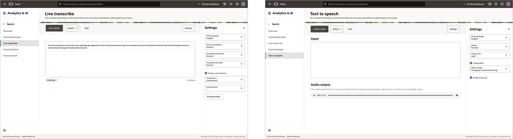
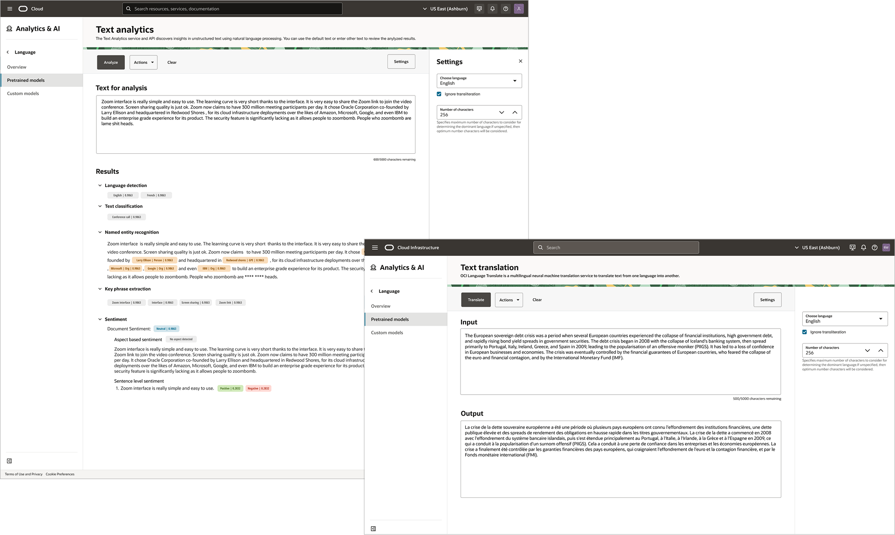
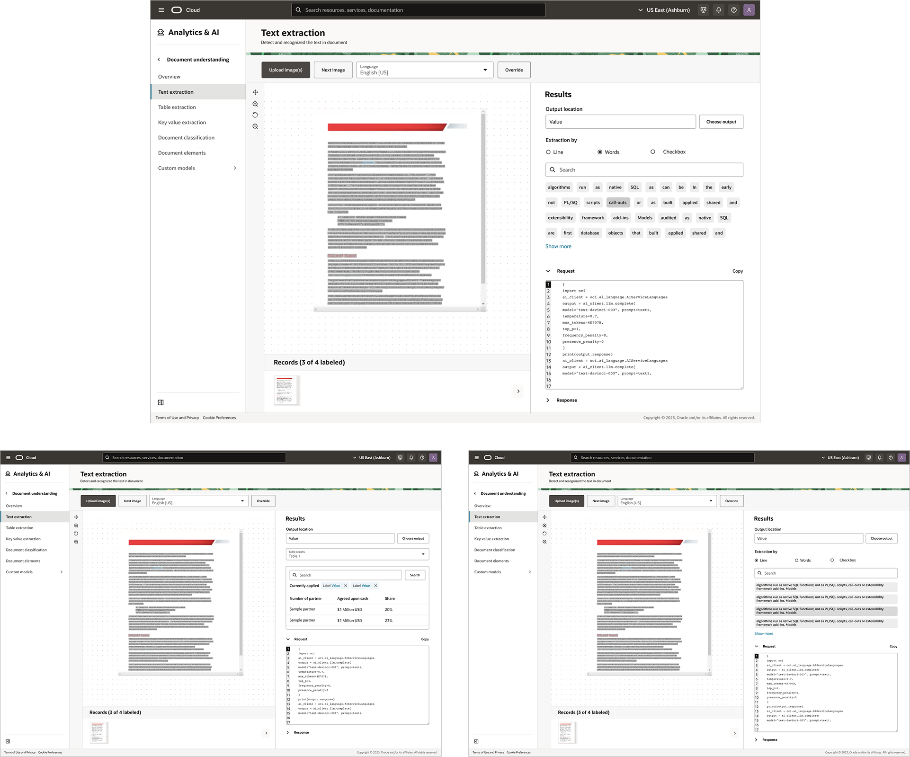

AI Products
I joined Oracle Cloud Infrastructure with a strong interest in working on AI products, at a time when the space was rapidly evolving. I worked across a range of services that support customer-facing AI experiences, from image analysis to document understanding, gaining a deeper understanding of how AI systems operate and what they require to succeed.
OCI Generative AI
A platform for building AI-driven experiences like chat and content generation. It makes advanced models more accessible, allowing teams to focus on designing meaningful user experiences rather than managing infrastructure. Built for real-world use, it supports scalable applications with strong security and control.

OCI AI Agents
A framework for designing intelligent assistants that understand context and handle multi-step tasks. These agents combine conversation, memory, and access to data to create more helpful and personalized interactions. They are designed to support real user needs such as answering questions, guiding workflows, and improving efficiency.

OCI AI Vision
A service for turning images and videos into actionable insights. It can recognize objects, extract text, and classify visual content, making it easier to organize and work with visual data. With ready-to-use models, teams can quickly add visual intelligence to digital experiences without deep technical overhead.

OCI AI Speech
A solution for enabling voice-based interactions through speech-to-text and text-to-speech capabilities. It helps make audio content searchable and accessible, supporting features like transcription, captions, and voice interfaces. Designed for easy integration, it allows teams to bring voice experiences into products with minimal setup.

OCI AI Language
A tool for analyzing and understanding text at scale. It can detect sentiment, extract key information, classify content, and translate across languages, turning unstructured text into useful insights. With prebuilt models, teams can quickly create features like search, categorization, and feedback analysis.

OCI AI Document Understanding
A solution for converting documents such as PDFs, invoices, and receipts into structured data. It can extract text, identify key details, and detect tables, helping automate workflows and reduce manual effort. With out-of-the-box models, teams can quickly build more efficient, data-driven experiences.

Across these AI product areas, we learned that successful AI experiences require a strong user-centered approach, balancing innovation with clarity and usability. Our work was guided by industry best practices, emerging AI trends, and competitive analysis, combined with close collaboration with product managers and users to understand real needs.